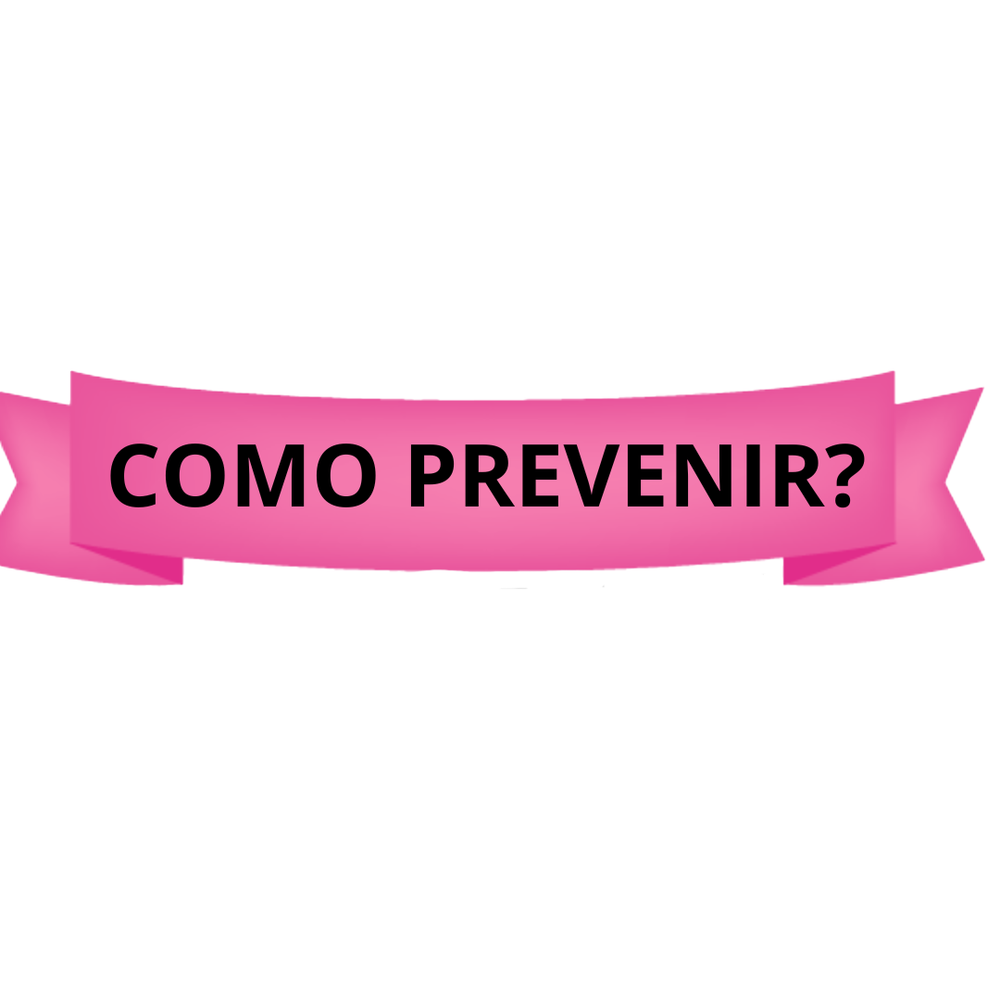

OUTUBRO ROSA
Outubro Rosa é uma campanha de conscientização sobre o câncer de mama que ocorre em todo o mundo durante o mês de outubro. O principal objetivo desta iniciativa é aumentar a conscientização sobre a importância da detecção precoce do câncer de mama, bem como arrecadar fundos para pesquisas, prevenção e tratamento dessa doença.
A campanha Outubro Rosa começou nos Estados Unidos na década de 1990 e desde então se espalhou por todo o mundo, tornando-se um movimento global. O nome "Outubro Rosa" faz referência à cor rosa, que simboliza a luta contra o câncer de mama e o apoio às mulheres que enfrentam essa doença.
Durante todo o mês de outubro, diversas atividades e eventos são realizados para promover a conscientização sobre o câncer de mama. Isso inclui caminhadas, corridas, iluminação de monumentos e edifícios com luzes cor de rosa, palestras informativas, distribuição de materiais educativos e muito mais. Muitas empresas e organizações também aderem à campanha, promovendo a conscientização entre seus funcionários e clientes.
Um dos principais objetivos da campanha Outubro Rosa é incentivar as mulheres a realizarem o autoexame das mamas regularmente e a fazerem mamografias de rastreamento de acordo com as diretrizes médicas. A detecção precoce do câncer de mama aumenta significativamente as chances de tratamento bem-sucedido e recuperação. Além disso, a campanha visa eliminar o estigma em torno do câncer de mama e oferecer apoio emocional às mulheres que passam por essa jornada.
É importante lembrar que o câncer de mama afeta não apenas as mulheres, mas também os homens, embora em menor proporção. Portanto, a conscientização e a prevenção devem ser abordadas de forma inclusiva.
O Outubro Rosa é uma oportunidade para que a sociedade como um todo se una na luta contra o câncer de mama, demonstrando solidariedade, apoio e compaixão às pessoas afetadas por essa doença. É uma lembrança de que, juntos, podemos fazer a diferença na prevenção e no tratamento do câncer de mama e, assim, salvar vidas.
